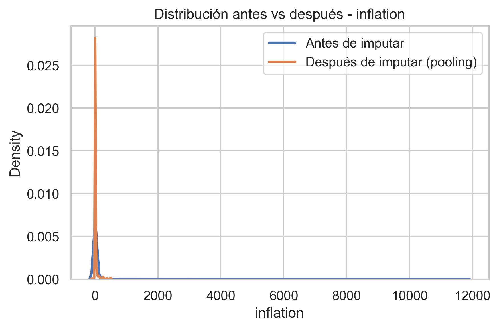
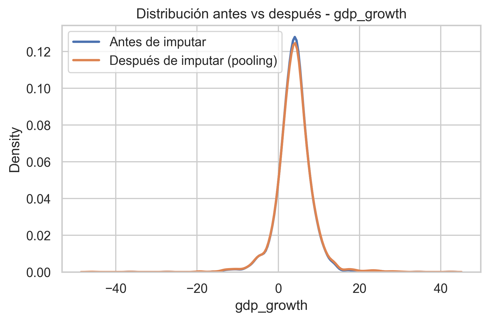
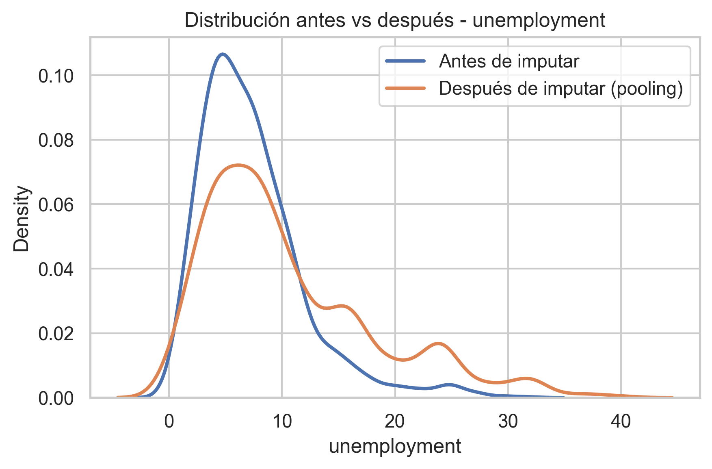
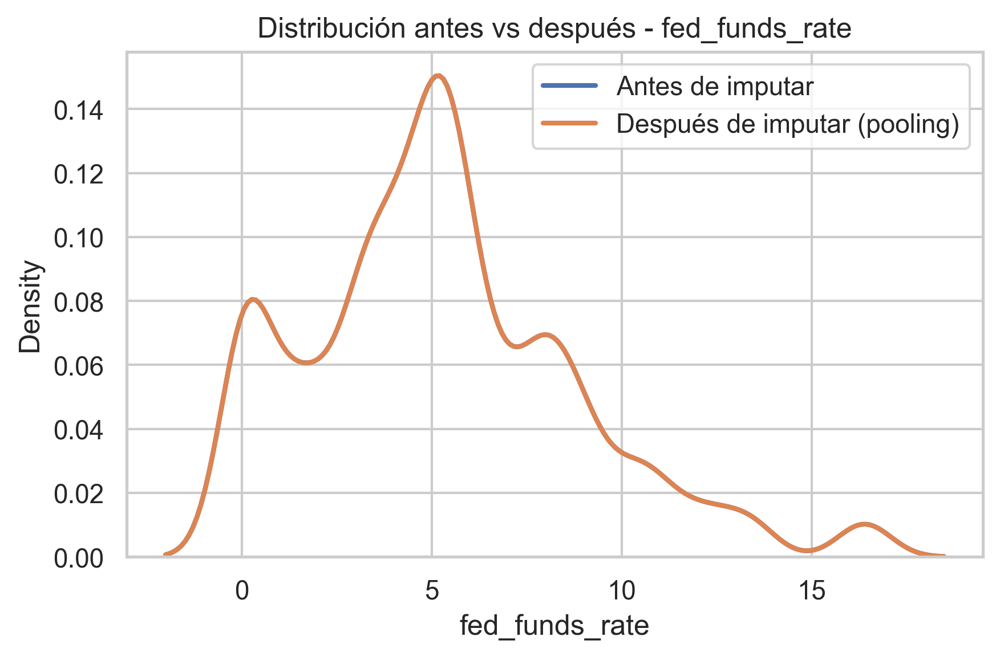
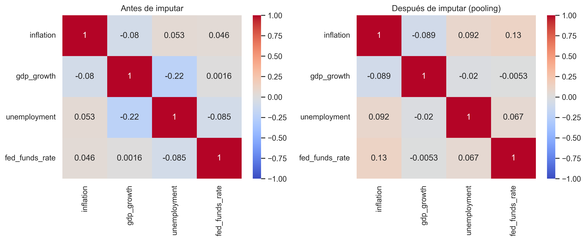

Análisis exhaustivo de crisis financieras globales usando ciencia de datos, estadística avanzada y APIs documentadas
Observaciones (Original → Filtrada)
Cobertura Temporal (56 años)
Países (Original → Filtrado)
Variables Macro de Estudio
Las crisis financieras representan fenómenos complejos que alteran significativamente la estabilidad económica global. Desde las crisis de deuda soberana de los años 80 hasta episodios recientes de alta volatilidad macroeconómica, estos eventos han dejado efectos persistentes sobre inflación, crecimiento, empleo y estabilidad monetaria.
Este proyecto combina:
Pipeline determinístico que estandariza datos, normaliza campos y preserva trazabilidad metodológica.
Funciones PurasIdentificación de valores extremos por país y variable usando criterio IQR sin eliminar automáticamente datos plausibles.
Estadística RobustaEDA documentado con visualizaciones profesionales, correlaciones panel y validaciones de supuestos.
Data QualityEndpoints FastAPI con validación Pydantic estricta, documentación Swagger/ReDoc automática.
ASGI ModernoSuite pytest con cobertura en validación de tipos, funciones puras y edge cases.
pytest + MyPyRecuperación de datos faltantes usando IterativeImputer con Bayesian Ridge, estructura temporal y pooling por promedio.
Scikit-learn| Característica | Descripción |
|---|---|
| Observaciones | 3,864 registros en la base original; 3,416 en la base filtrada utilizada para imputación final |
| Período Temporal | 1960 a 2015 (56 años continuos) |
| Cobertura Geográfica | 69 países originales → 61 después del filtrado (8 eliminados por exceso de faltantes) |
| Granularidad | Anual (panel país-año con cobertura desigual entre variables) |
| Variables Macroeconómicas | 1. Inflación | 2. Crecimiento PIB | 3. Desempleo | 4. Tasa de Fondos Federales |
| Indicadores de Crisis | Binarias: banking, currency, debt y crisis_any, además de variables adelantadas a 12 meses |
| Calidad de Datos | Imputación múltiple por país con pooling por promedio; missing residual < 2% en variables de estudio |
En esta sección mostramos la estructura del dataset y el pipeline de imputación final. Partimos de 3,864 observaciones país-año entre 1960 y 2015 para 69 países, y trabajamos metodológicamente con una base filtrada de 3,416 observaciones y 61 países después de remover países con exceso de datos faltantes.
El dataset cubre un período de 56 años con estructura panel histórica y cobertura desigual entre países y variables.
| Métrica | Base Original | Base Filtrada* |
|---|---|---|
| Observaciones Totales | 3,864 | 3,416 |
| Período Temporal | 1960-2015 (56 años) | |
| Países | 69 | 61 (8 eliminados por exceso de missing) |
| Variables Macro | inflation, gdp_growth, unemployment, fed_funds_rate | |
*Base filtrada: elimina países con más de 50% de faltantes en al menos 2 variables de estudio
El análisis de completitud mostró heterogeneidad importante entre variables. Unemployment fue la variable más incompleta, mientras que fed_funds_rate tuvo cobertura completa.
| Variable | % Missing (Original) | % Missing (Filtrada) |
|---|---|---|
| inflation | 14.93% | 7.87% |
| gdp_growth | 7.79% | 2.17% |
| unemployment | 46.25% | 42.24% |
| fed_funds_rate | 0.00% | 0.00% |
Algunos datos estaban incompletos, especialmente en desempleo e inflación para ciertos países y períodos tempranos. Utilizamos una estrategia de imputación múltiple por país que aprovecha la estructura temporal interna de cada economía y evita mezclar dinámicas nacionales muy diferentes.
Los gráficos a continuación comparan la distribución de cada variable antes de imputar en la base filtrada y después del pooling final. Esto permite verificar si la imputación preserva razonablemente la forma general de los datos sin introducir valores económicamente absurdos.

¿Qué significa? La inflación presenta una distribución muy asimétrica, con episodios extremos asociados a crisis macroeconómicas severas.
Para ti: La comparación entre la distribución observada y la distribución después del pooling muestra que la imputación mantiene una forma razonable, evitando los extremos irreales que aparecían en versiones iniciales del procedimiento.

¿Qué significa? El crecimiento del PIB se concentra en valores moderados, con episodios recesivos y expansiones fuertes en algunos contextos.
Para ti: La imputación conserva razonablemente la distribución general y no introduce desplazamientos importantes en media o rango.

¿Qué significa? El desempleo es la variable más incompleta del conjunto y también una de las más difíciles de reconstruir por su menor estructura de correlación con otras variables.
Para ti: Esta era la variable más incompleta del dataset. Por eso, aunque la imputación mejora la cobertura, sigue siendo la variable con mayor incertidumbre relativa dentro del proceso.

¿Qué significa? La tasa de referencia de la Reserva Federal refleja distintos regímenes monetarios a lo largo del período.
Para ti: Como esta variable no presentaba faltantes, sirve como referencia de estabilidad y control dentro del proceso de análisis.
El resumen siguiente compara medias y desviaciones estándar entre la base filtrada original y la base final después de imputación y pooling.
| Variable | Media Original | Media Final | Desv. Est. Original | Desv. Est. Final |
|---|---|---|---|---|
| inflation | 22.73 | 19.63 | 270.33 | 73.92 |
| gdp_growth | 3.94 | 3.99 | 4.25 | 6.03 |
| unemployment | 7.29 | 10.33 | 4.64 | 12.17 |
| fed_funds_rate | 5.26 | 5.26 | 3.55 | 3.55 |
La variable con mayor incertidumbre post-imputación es unemployment, debido a su alta proporción de faltantes y menor estructura de correlación.
El mapa de calor siguiente compara las correlaciones entre las variables antes de imputar y después del pooling final.

Izquierda: correlaciones en la base filtrada antes de imputar | Derecha: correlaciones después de la imputación final con pooling.
La relación negativa entre crecimiento y desempleo es consistente con la intuición macroeconómica general.
Teoría MacroLa inflación sigue siendo la variable con mayor dispersión, reflejando episodios extremos históricamente plausibles.
Alta VolatilidadLa imputación múltiple por país con pooling redujo el missing residual a < 2% en las variables más difíciles, preservando la estructura panel.
Imputación EstableUnemployment sigue siendo la variable más exigente por su alta proporción de faltantes y menor soporte correlacional.
Alta IncertidumbreLa base filtrada conserva 61 países entre 1960 y 2015, lo que mejora la estabilidad de la imputación sin perder el carácter internacional del análisis.
Panel FiltradoLa baja correlación entre varias variables sugiere que la estructura temporal por país es más informativa que la dependencia cruzada pura.
Dependencia ModeradaLa API REST está construida con FastAPI y Pydantic 2.0. Proporciona validación estricta de tipos, documentación automática (Swagger UI, ReDoc) y manejo robusto de errores.
http://localhost:8000 http://localhost:8000/docs http://localhost:8000/redoc
{
"message": "API Crisis Financieras - OK",
"docs": "/docs",
"redoc": "/redoc",
"health": "/health"
}{"ok": true}{
"iso3": "COL",
"year": 1999
}{
"iso3": "COL",
"year": 1999,
"inflation": 10.87,
"gdp_growth": -4.20,
"unemployment": 20.06,
"real_interest_rate_10y": 2.89,
"crisis_any": 1,
"banking_crisis": 1,
"found": true,
"meta": {}
}{
"detail": [
{
"loc": ["body", "iso3"],
"msg": "iso3 debe tener longitud 3",
"type": "value_error"
}
]
}iso3: StrictStr, longitud exacta 3, convertido a UPPERCASEyear: StrictInt, rango [1800, 2100]extra="forbid": No se permiten campos adicionales{
"rows": [
{
"iso3": " col ",
"year": 1999,
"inflation": 10.8,
"gdp_growth": -4.2,
"unemployment": 20.0,
"fed_funds_rate": 5.3
},
{
"iso3": "USA",
"year": 2008,
"inflation": 3.8,
"gdp_growth": -0.1,
"unemployment": 5.8,
"fed_funds_rate": 1.9
}
]
}{
"rows": [
{
"iso3": "COL",
"year": 1999,
"inflation": 10.8,
"gdp_growth": -4.2,
"unemployment": 20.0,
"fed_funds_rate": 5.3
},
{
"iso3": "USA",
"year": 2008,
"inflation": 3.8,
"gdp_growth": -0.1,
"unemployment": 5.8,
"fed_funds_rate": 1.9
}
]
}rows: Lista no vacía de CleanRowInmin_length=1: Al menos 1 filaextra="forbid": Validación estrictaSin parámetros (POST vacío)
| Código | Significado | Ejemplo |
|---|---|---|
| 200 OK | Éxito. Respuesta válida. | Fila encontrada, limpieza completada |
| 400 Bad Request | JSON malformado o no decodificable. | {bad json} |
| 422 Unprocessable Entity | Validación Pydantic fallida. | ISO3 inválido, year fuera de rango o campos extra |
| 500 Internal Server Error | Error interno del servidor. | Archivo de datos no encontrado |
import requests
BASE_URL = "http://localhost:8000"
# Consultar fila
response = requests.post(
f"{BASE_URL}/row",
json={"iso3": "COL", "year": 1999}
)
print(response.json())
# Limpiar lote
response = requests.post(
f"{BASE_URL}/clean",
json={
"rows": [
{"iso3": " col ", "year": 1999, "inflation": 10.8}
]
}
)
print(response.json())
# Ejecutar imputación
response = requests.post(f"{BASE_URL}/impute-missing")
print(response.json())/docs para explorar, probar y documentar endpoints interactivamente.
Repositorio_APIS/
├── data/
│ ├── raw/
│ │ └── global_crisis_data.csv
│ └── processed/
│ ├── global_crisis_data_clean.csv
│ └── global_crisis_data_imputed_filtered.csv
├── docs/
│ ├── index.html
│ ├── css/
│ │ └── style.css
│ ├── img/
│ │ ├── distribution_mice_inflation.png
│ │ ├── distribution_mice_gdp_growth.png
│ │ ├── distribution_mice_unemployment.png
│ │ ├── distribution_mice_fed_funds_rate.png
│ │ └── correlation_heatmap.png
│ └── data/
│ └── eda_stats.json
├── notebooks/
│ └── analisis_exploratorio.ipynb
├── src/
│ ├── __init__.py
│ ├── limpieza.py
│ ├── outliers.py
│ ├── missing_data.py
│ ├── schemas.py
│ ├── clean_schemas.py
│ └── app.py
├── tests/
├── requirements.txt
├── pytest.ini
└── README.md
Pipeline de limpieza básica:
estandarizar_columnas() - trim de espacios en nombreslimpiar_iso3() - uppercase y normalización del código paísconvertir_year() - conversión robusta a entero nullablevalidar_panel_base() - chequeos de consistencia del panelFunciones puras y reutilizables desde notebook o API.
Diagnóstico de outliers por país y variable:
outliers_por_pais() - detecta outliers usando IQR dentro de cada paísSe usa con fines diagnósticos; no elimina datos automáticamente.
Imputación y consolidación de datos faltantes:
filtrar_paises_exceso_missing() - identifica países con exceso de faltantesrun_multiple_mice_by_country() - imputación múltiple por país con Bayesian Ridgepromediar_imputaciones() - pooling por promedioresumen_imputacion() - comparación pre/post imputaciónUsa IterativeImputer de Scikit-learn con YEAR como predictor temporal.
Validación strict de Pydantic 2.0:
InputSchema - request para /row (iso3, year)OutputSchema - response con datos de fila@field_validator para lógica customFastAPI application:
GET / - root infoGET /health - health checkPOST /row - buscar filaPOST /clean - limpiar lotePOST /impute-missing - ejecutar imputaciónDocumentación automática en /docs (Swagger UI) y /redoc.
# 1. Crear entorno virtual
py -3.11 -m venv .venv
.\.venv\Scripts\Activate.ps1
# 2. Instalar dependencias
pip install -r requirements.txt
# 3. Ejecutar notebook EDA
# notebooks/analisis_exploratorio.ipynb
# 4. Ejecutar tests
pytest -v
# 5. Iniciar API
uvicorn src.app:app --reload
# Navegar a http://localhost:8000/docsData Engineer & Statistician
Especialista en pipelines reproducibles, limpieza de datos y validación estadística.